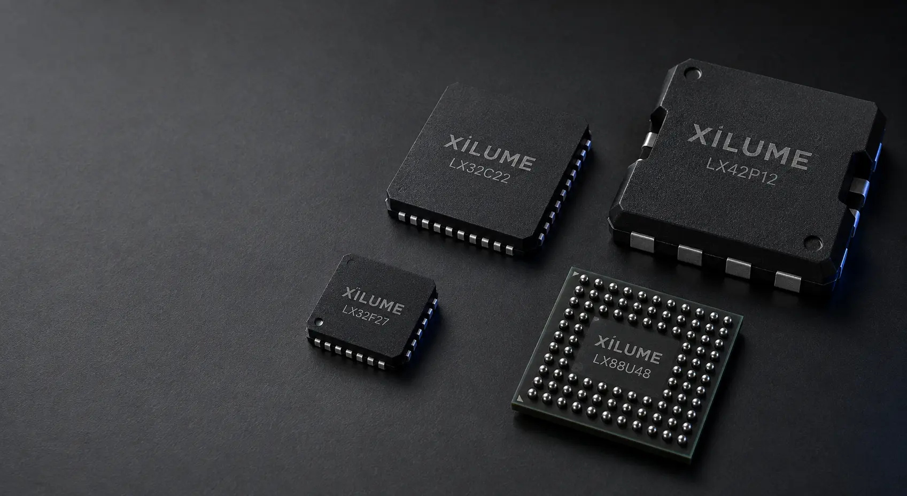

01
F SERIES
LX32F27
Dual CAN FD controller
BEST FITRobotics, vehicles, embedded computers
- 2 × CAN / CAN FD
- Up to 8 Mbps
- Windows + Linux

Choose the result you need. We only show controllers that match a real Xilume platform.
Choose an application
WHAT SHOULD THE CONTROLLER DO?
Showing all four Xilume controllers.
Dual CAN FD controller
Dual Classic CAN controller
Eight-channel hub controller
Battery + power bridge

NOT SURE WHICH SERIES?